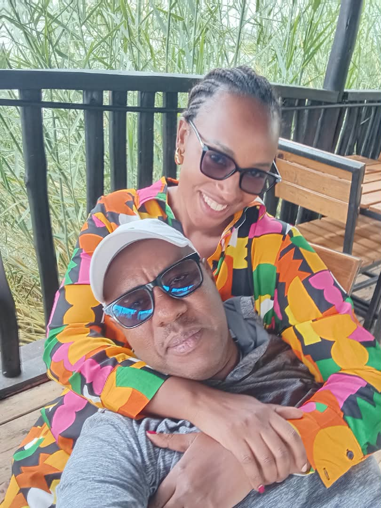
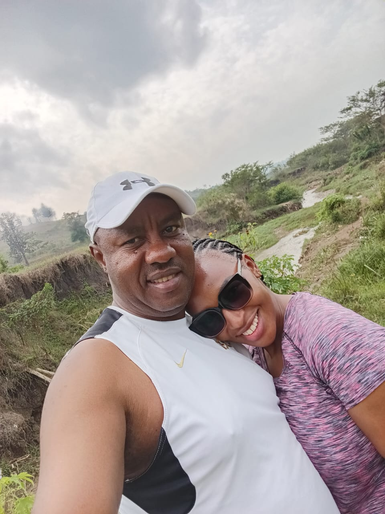
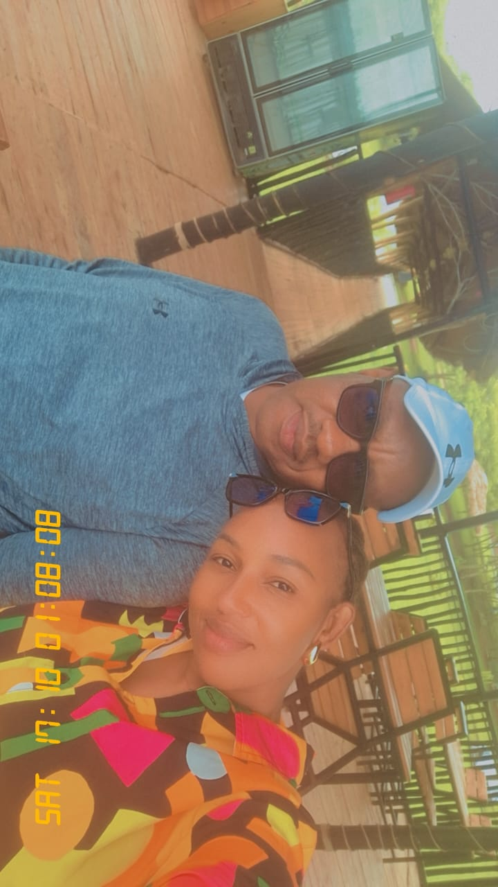

The beginning of something precious ♡
YES, YVES ♡
FOREVER STARTS HERE
Yves, if life is asking me who I want beside me through all the years ahead, my answer has your name written all over it. Today, tomorrow, and for as long as I am blessed to live, I choose you.
Read The Moment My Heart Answered ♡A little music for our special moment ♡
Yves, these pictures may hold only a few moments, but what I feel for you could never fit inside a frame. You have become part of the future I imagine and the happiness I hope to keep building.

The beginning of something precious ♡

A memory my heart keeps close ♡

A little glimpse of my forever ♡
My answer is more than a beautiful word today. These are the things I hope to bring into the life we build together, one decision at a time.
I want to understand the person behind your words, respect your feelings, and never assume that loving you means I already know everything about you.
I want us to share the work, the decisions, the victories, and the hard conversations. Our future should carry the effort of both our hands.
I want to be careful with your trust, honest with my feelings, generous with forgiveness, and intentional about making time for us.
May our future contain more than beautiful photographs. May it hold meaningful conversations, shared victories, courage during uncertain seasons, a peaceful home, and the freedom to become better people together.
Yes, Yves, to the plans we have not made yet. Yes, to discovering new sides of each other. Yes, to making decisions as partners and finding our way through life with mutual respect.
Yes to growing older with stories only we understand. Yes to the small traditions we will create, the lessons that will shape us, and the home we will fill with our own kind of happiness.
If forever is made from all the days we are given, then my wish is to spend those days building a life with you, Yves. My name is Germaine, and this is my answer to the future: I choose you.
May God guide our steps, strengthen our understanding, and bless the love we choose to nurture. Whatever the years bring, may we keep meeting each other with sincerity, respect, and willing hearts.
Two names, one shared dream, and a future we will build together. ♡
Read My Yes Again ↑